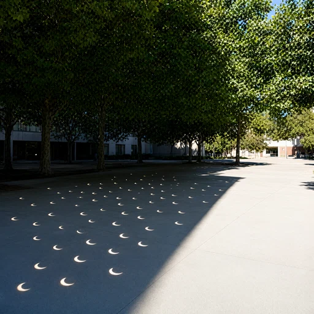
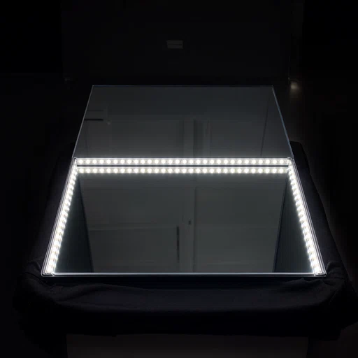
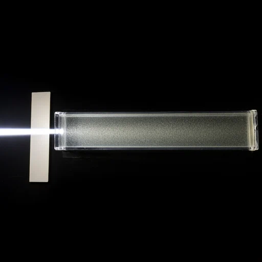

Learn to act
Three epochs of supervised policy training teach a vision–language model to inspect images and call the drawing tool.
OPTICAL REASONING × IMAGE GENERATION
OptiAtlas connects an optical benchmark, image–text training data, and a reasoning agent that turns scene requests into physically informed drawing instructions.
Research artifacts · Private migration preview · Site not deployed
01 / METHOD
Each stage has a distinct role. Training lineage and controlled ablations are preserved alongside the released code.
Three epochs of supervised policy training teach a vision–language model to inspect images and call the drawing tool.
GRPO uses a continuous text reward: correctness × completeness of the physical outcomes in the final drawing prompt.
The fixed RL policy rewrites simple requests into drawing prompts paired with reference images. The generator is adapted with group-normalized DINOv2, −MSE and HPSv2.1 rewards.
02 / VISUAL RESULTS
Selected examples from the recorded main-table run, compared with the unadapted image generator. These illustrate particular successes; they are not a random sample or a substitute for aggregate evaluation.


A photorealistic news-style photograph of a sunny campus courtyard during a moderate-to-large partial solar eclipse, when the Moon covers roughly one-half to two-thirds of the Sun’s diameter. A dense, tall plane-tree canopy contains many small, separated gaps between leaves, allowing sunlight to reach flat pale-gray pavement. Frame the patterned projections within the deep shade, the edge of the canopy, and an adjacent open area receiving unobstructed sunlight. Ground detail must be large enough for individual small projections to be distinguished. Do not show the Sun directly in the sky, and include no solar-filter inset, lens, ray arrows, diagram, or explanatory text.


Photorealistic photograph of a rectangular LED infinity mirror in a dark technology exhibit. A clean partially reflective front pane is mounted strictly parallel to a conventional rear plane mirror, with one continuous ring of equally bright neutral-white LEDs fixed between them. Place the camera on the central frontal axis and conceal it with black cloth, including all four outer edges, the front glass boundary, and the multiple-reflection effect. Keep the room dim and use a fixed exposure that does not clip the nearest LEDs. Do not add painted tunnels, fog effects, labels, or ray diagrams.


Photorealistic optics teaching experiment in a dark room with a black background. A narrow collimated, broad-spectrum white LED beam enters an elongated transparent tank from the left. The tank contains a uniform dilute colloid whose particles are much smaller than visible wavelengths, concentrated enough to reveal scattering over the long path while the tank remains optically transparent. Photograph nearly perpendicular to the beam. Place a neutral-white reference tab illuminated by the same source beside the entrance, using fixed white balance and exposure. Keep the tank entrance, the illuminated interior region, and surrounding unilluminated colloid visible in the same frame. No ray arrows, spectrum diagrams, or answer labels.
03 / OPTIATLAS-BENCH
Light-Omni-v6.1 · Gemini-3.6-Flash judge · Randomized answer positions. Percentages below are question-level metrics from the recorded runs.
Precision
79.35 ± 1.23 pp
Precision mean ± sample SD
over three independent generation runs
The selected run is a best single run, not a mean. Strict Dense/Agent caption-control checkpoints are separate ablations.
| Model / method | Precision ↑ (%) | Judgability (%) | Overall pass (%) |
|---|---|---|---|
| Nano Banana 2.1 | 86.50 | 98.30 | 85.03 |
| OptiAtlas-Agent | 80.54 | 99.00 | 79.74 |
| Seedream 5.0 Pro | 75.76 | 98.80 | 74.85 |
| Qwen-Image 3.0 | 57.51 | 97.70 | 56.19 |
| FLUX.2-dev | 53.96 | 98.20 | 52.99 |
| Qwen-Image-2.1 | 53.94 | 97.50 | 52.59 |
| SenseNova-U1.5 | 52.90 | 98.10 | 51.90 |
| Grok-2-image | 52.70 | 98.10 | 51.70 |
| HunyuanImage 3.0 | 45.73 | 98.20 | 44.91 |
| Z-Image Turbo | 41.24 | 96.31 | 39.72 |
A = correct, B = incorrect, C = cannot determine.
P = A/(A+B) · J = (A+B)/(A+B+C) · O = A/(A+B+C). These semantic labels differ from shuffled option letters.
04 / ARTIFACTS
Training, inference, evaluation, environment recipes and ablations.
02 / DATAImage pairs, optical rules, trajectories and RL requests.
03 / WEIGHTSThe exact SFT base, RL adapter and final generator adapter.
All repositories are private during migration. Third-party licenses continue to apply. No public-release date or paper acceptance is asserted.